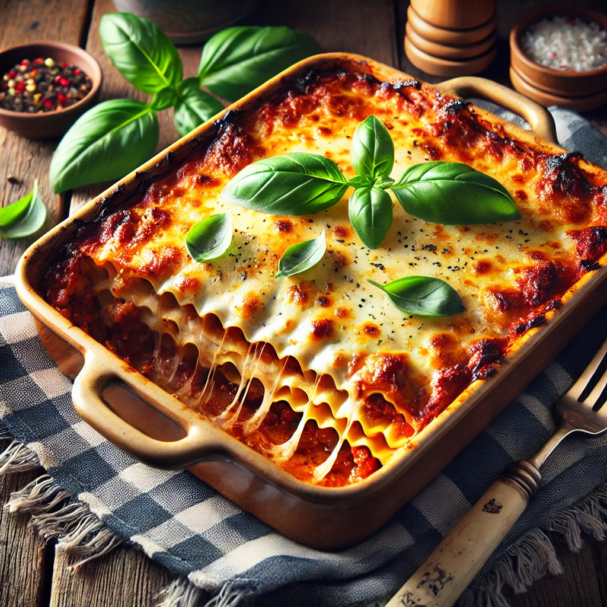

Lasagna Recipe

Description
Lasagna is a classic Italian dish featuring layers of pasta, a rich meat sauce, creamy béchamel, and gooey cheese. It’s hearty, flavorful, and perfect for gatherings or a comforting dinner.
Ingredients
- For the Meat Sauce:
- 2 tablespoons of olive oil
- 1 finely chopped onion
- 2 garlic cloves, minced
- 500g ground beef
- 500g canned tomatoes
- 2 tablespoons tomota paste
- 1 teaspoon dried basil
- 1 teaspoon dried oregano
- Salt and pepper, to taste
- For the Béchamel Sauce:
- 50g butter
- 50g all-purpose flour
- 500ml milk
- Nutmeg (a pinch)
- Salt and pepper, to taste
- For the Assembly:
- 250g lasagna sheets
- 200g mozzarella cheese, shredded
- 50g Parmesan cheese, grated
Steps
- Make the Meat Sauce:
- Heat olive oil in a pan and sauté onion and garlic until soft.
- Add ground beef and cook until browned.
- Stir in tomatoes, tomato paste, basil, oregano, salt, and pepper. Simmer for 30 minutes.
- Prepare the Béchamel Sauce:
- Melt butter in a saucepan. Stir in flour and cook for 1 minute.
- Gradually whisk in milk. Simmer until thickened.
- Add nutmeg, salt, and pepper to taste.
- Assemble the Lasagna:
Preheat oven to 180°C (350°F).
In a baking dish, spread a layer of meat sauce, followed by lasagna sheets, and then béchamel. Repeat the layers, ending with béchamel.
Top with mozzarella and Parmesan cheese.
- Bake:
Cover with foil and bake for 25 minutes. Remove the foil and bake for an additional 20 minutes, or until golden and bubbly.
Home